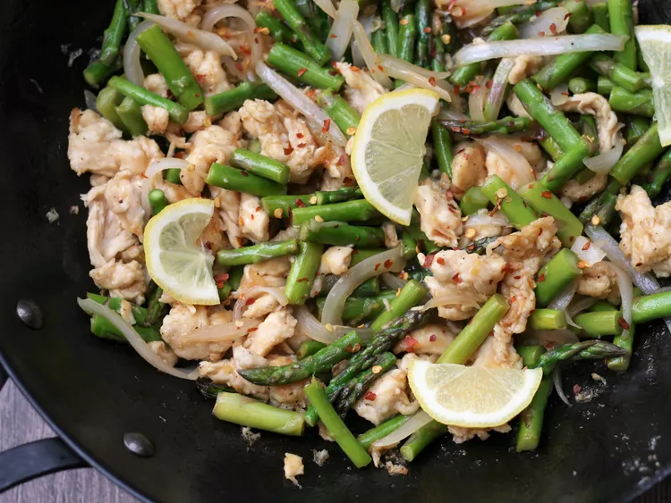

Lemon Chicken and Asparagus Stir-Fry

This simple chicken and asparagus stir-fry explodes with bright, tangy flavors. This comes together quickly, which makes it perfect for hectic weeknights. May be served over steamed rice.
Ingredients
Sauce:
- 1/4 cup chicken broth
- 1/4 cup lemon juice
- 2 tablespoons reduced-sodium soy sauce
- 2 tablespoons brown sugar
- 1 teaspoon lemon zest
- 1 teaspoon cornstarch
Stir-Fry:
- pound boneless skinless chicken breast, cut into 1-inch pieces
- 1/4 cup cornstarch
- 3/4 teaspoon salt
- 1/4 teaspoon freshly ground black pepper
- 2 tablespoons vegetable oil, divided
- 1 pound asparagus, trimmed and cut into bite-sized pieces
- 1 white onion, cut into 1/4-inch wedges
- 1/2 teaspoon crushed red chile, or to taste (optional)
- 1 lemon, thinly sliced (optional)
Directions
- chicken broth, lemon juice, soy sauce, brown sugar, lemon zest, and 1 teaspoon cornstarch together in a bowl; set aside.
- Mix chicken, 1/4 cup cornstarch, salt, and black pepper in a bowl and toss to coat evenly.
- Heat 1 tablespoon oil in a wok or large skillet over medium-high heat. Cook asparagus and onion until tender-crisp, stirring frequently, 4 to 5 minutes. Remove vegetables from pan; set aside.
- Heat remaining oil in same wok over medium-high heat and cook chicken for 3 minutes undisturbed, taking care not to overcrowd the pan. You may need to do two batches. Flip chicken over and continue cooking, breaking up any large pieces, until evenly browned, 3 to 4 minutes more.
- Add asparagus and onion back to the pan. Whisk sauce and pour into the pan, scraping up any browned bits. Stir constantly until sauce comes to a simmer and thickens, 1 to 2 minutes. An instant-read thermometer inserted into the center of chicken should read at least 165 degrees F (74 degrees C). Season with salt and ground black pepper. Garnish with crushed red chilies and lemon slices.